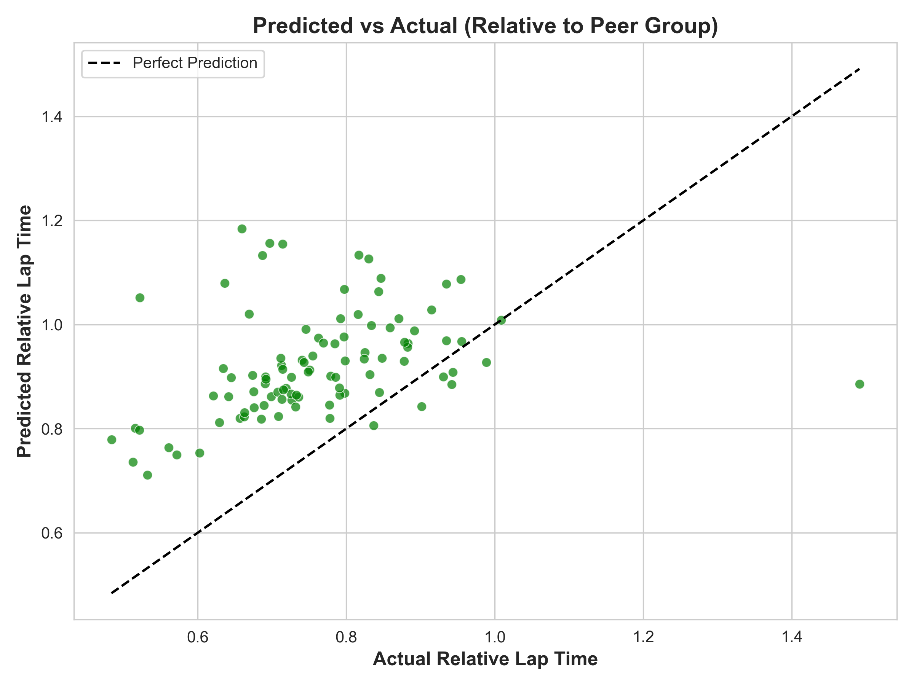
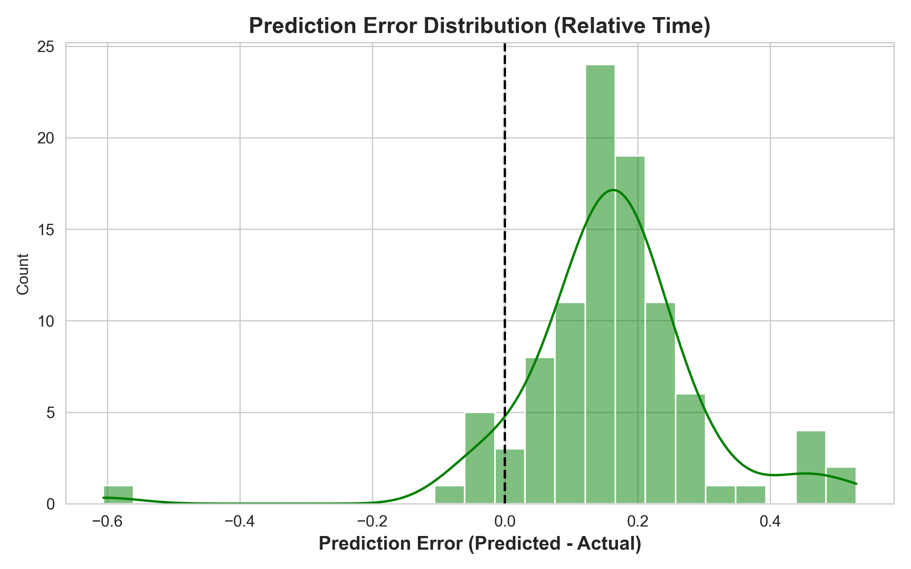
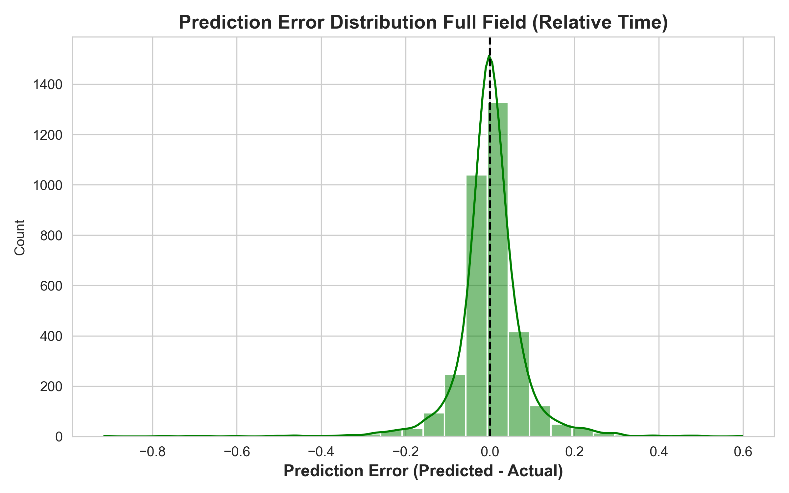
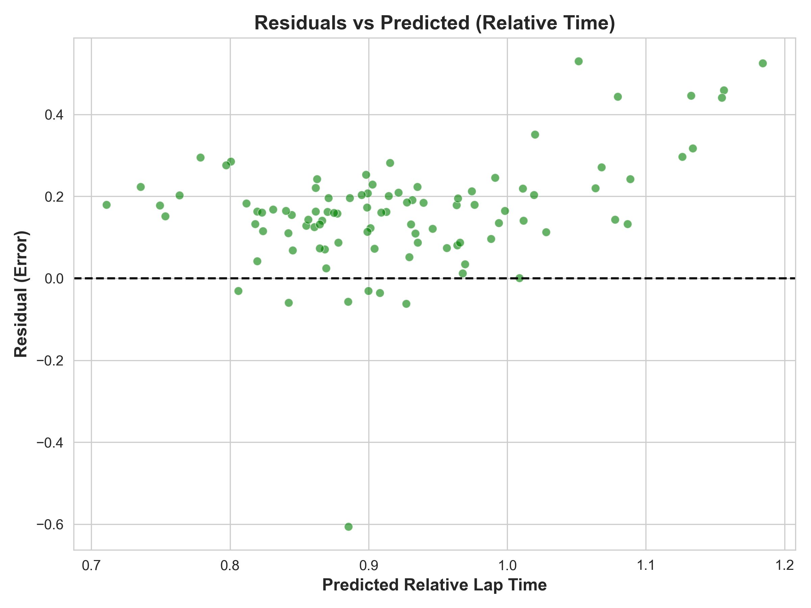
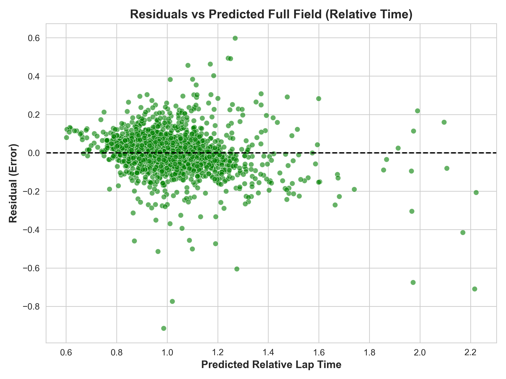
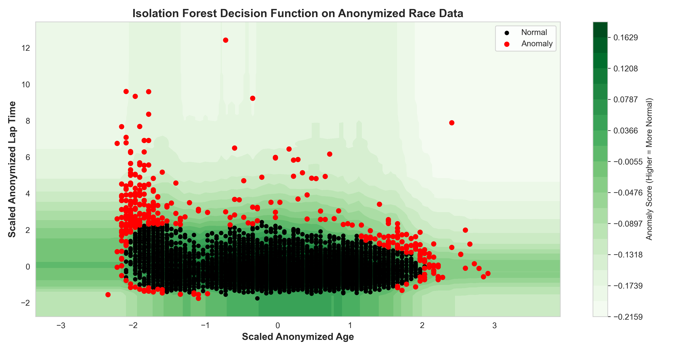
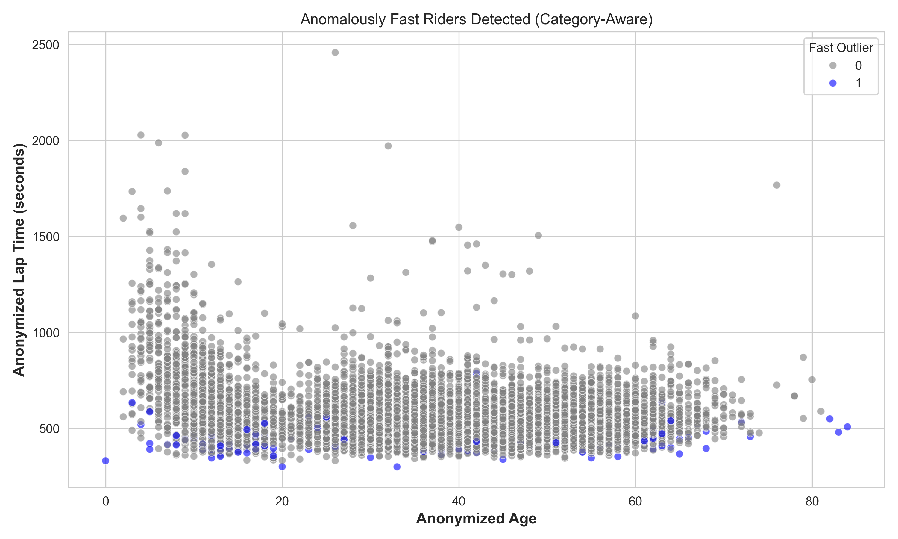

Cyclocross Results Analysis
Repository: View on GitHub
This project dives into anonymized cyclocross racing data from multiple seasons to explore rider performance trends, detect outliers, and build predictive models based on past performance.
Goals
- Detect anomalously fast performances using statistical and ML-based methods
- Predict race outcomes using historical rider data only
- Normalize lap times relative to age and gender groups for fairer comparison
Model Comparison: Fast Outliers vs Full Field
Predicted vs Actual

Fast Outliers

Full Field
Prediction Error Distribution

Fast Outliers

Full Field
Residuals vs Predicted

Fast Outliers

Full Field
Key Visualizations
Isolation Forest Anomaly Detection
Visualizing the isolation forest decision function helps identify riders whose performance is unusually fast for their age. These insights could be useful for talent identification or error checking in race timing data.
Category aware anomaly detection
By also accounting for category, outliers controlled by category and demographic group can be located.
Methods
- Z-Score and Isolation Forest for anomaly detection
- Random Forest regression to predict normalized lap times
- Relative performance calculated against peer groups (same age/gender)
Key Takeaways
- Historical relative performance is a strong predictor of future results
- Outliers are harder to predict but can be flagged with confidence
- Normalization by demographic peer group ensures fairness in modeling
Explore More
Check out the full notebook and code here.